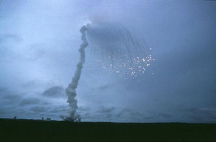
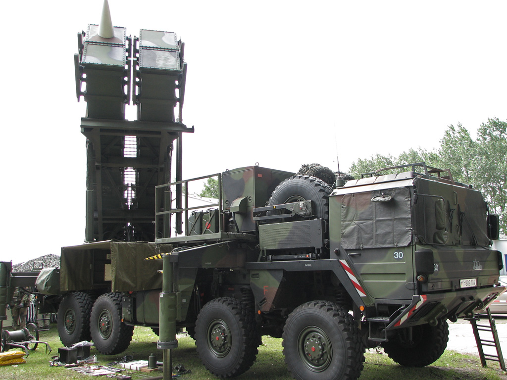

The Stories of The Most Infamous Bugs
Ian Zelikman
@izcoder
ian.zelikman@gmail.com
Motivation
What Is A Bug
Bug Etymology and History
First Bug In Software

Infamous Bugs
Mars Climate Orbiter

Loss Of Contact

The Result


Why This Bug
Ariane 5 Explosion

Overflow

The Results

Why This Bug
AT&T Long Distance

Call Waiting...
The Results

Why This Bug

Patriot System Failure

Failure At Dahhran
The Results
Why This Bug

World End 1983

False Alarm
The Result
Why This Bug
How Not To Create A Famous Bug